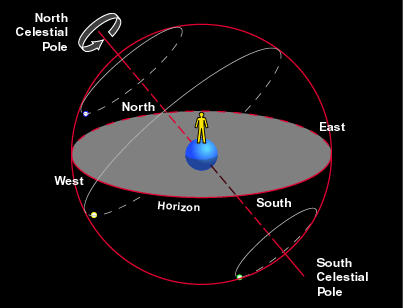
We could imagine that the Earth is at the center of a large sphere, called the celestial sphere; and the Sun, stars, etc. are located on the sphere. Because the Earth is rotating from the west to the east, everything on the celestial sphere will apparently move from the east to the west. This is why the Sun rises from the east.For a general position in the northern hemisphere (not at the north pole and not on the equator), from the picture, we can see the rotational axis of the Earth is tilted from the local horizon. As a result, stars near the north celestial pole never set. We call them circumpolar stars. One of the circumpolar star, called Polaris, is special because it is very near the north celestial pole. Thus, it appears to be stationary.
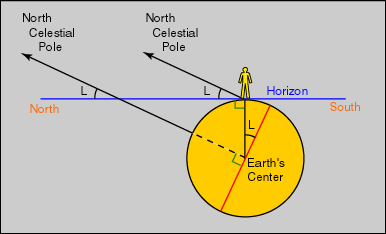
The position of Polaris relative to the ground depends on the latitude of the observer. For example, for people in Hong Kong, Polaris will be about 22.4° above the ground due north.Similarly, some stars never rise. People in the northern hemisphere can never see stars near the south celestial pole, and people on the southern hemisphere can never see Polaris. Poor southerners, there is no bright star near the south celestial pole.
Here are three simulations of what can be seen at some fixed
location in the northern hemisphere. The first one
is facing the north. (Note that Polaris does move a little
bit.) The second and the third show the motions of other stars at south and the
east respectively.
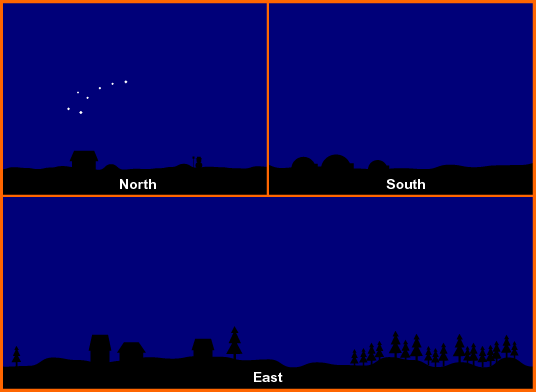
There is one important exception however. The Sun is also a star, but the Sun does move on the celestial sphere because the Earth revolves around it. It moves from west to east, and completes a full circle in a year. The path that the Sun traces out on the celestial sphere is called the ecliptic and the twelve constellations that the Sun goes through are the zodiac. (Note: Ecliptic does also go through the constellation Ophiuchus, but due to historical reason, it is not included in the zodiac.) These are the origin of zodiac in astrology. Contrary to common belief, the Sun does not spend equal time on each ecliptic constellation.
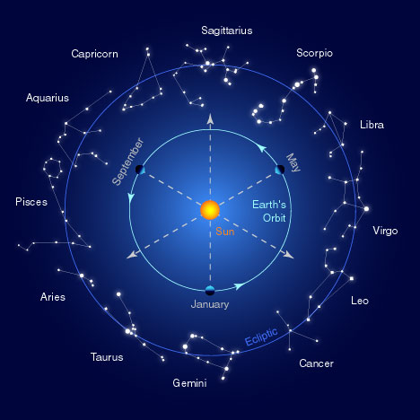
Question: What is a day?
Answer: Most people will define a day as the time the Sun
comes back to the same position relative to the ground, for
example, from one midday to another. This is exactly how the
sundial works. This defines the solar day. There is
another less common definition. We call it a day if other stars come
back to the same positions. This is the sidereal day. Due to the
revolution of the Earth, a solar day is longer than a sidereal
day. Approximately, a year has 365 solar days but 366
sidereal days. Do you know why?
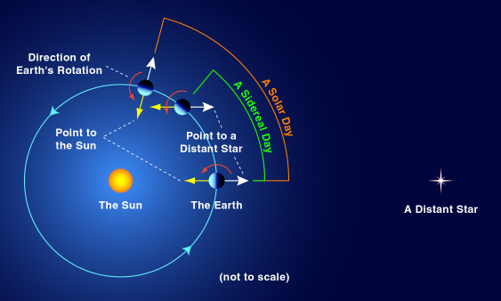
We say "approximately" because a year has 365.2422 solar days. To compensate the extra 0.2422 days, some years will have 365 days while some years, called leap years, will have 366 days. One extra day is added to the end of February in leap year. To determine which year is leap year, we ask three questions: 1. Is the year number divisible by 400? If yes, it is a leap year. If no, we ask the second question: 2. Is the year number divisible by 100? If yes, it is not a leap year. If no, we ask the third question: 3. Is the year number divisible by 4? If yes, it is a leap year. If no, it is not a leap year.
For example, we have February 29 in the years 2000, 2004, 2016, 2020, 2400, 2800, etc., but there will be no February 29 in the years 2015, 2017, 2018 and 1800, 1900, 2100, 2200, etc. This is called the Gregorian calendar. Using Gregorian calendar, the error accumulated in the next 3000 years will not be more than 1 solar day. (What happened to Oct, 1582?)
The apparent motion of the Moon is similar. The time between successive full Moons is the synodic month, it is 29.5 days long. Note that the Chinese calendar is based on both the motions of the Moon and the Sun, not just the Moon.
We have not done with the Sun yet. Since the rotational axis of the Earth is tilted from the revolution axis by 23.5°, the Sun, for example, rises at different directions at different times during the year.
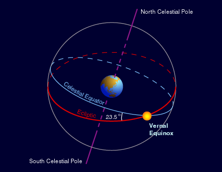
Similar to the equator on Earth, we have the celestial equator on the celestial sphere. The ecliptic will intersect the equator with an angle 23.5°. The two intersection points are the vernal equinox and autumnal equinox. The two points on the ecliptic which are farthest away from the equator are the summer solstice and winter solstice. Usually, the Sun passes through vernal equinox, summer solstice, autumnal equinox and winter solstice on March 20, June 21, September 23 and December 22 respectively. When the Sun is at the summer solstice, it shines above the northern hemisphere. The northern hemisphere will receive more sunlight and become hotter, hence the summer for the northern hemisphere. Note that in southern hemisphere, it is winter when the Sun is at summer solstice.
When the Sun is at the summer solstice, it rises at the northern most point and when it is at the winter solstice, it rises at the southern most point. That's why we have long daylight and short shadow in summer while the opposite in winter.
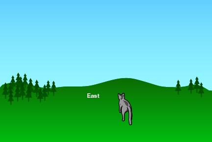
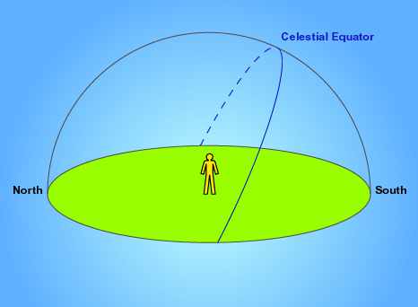
Mercury and Venus are inferior planets because their orbits are inside the orbit of the Earth. Thus, when watching from the Earth, they are never too far away from the Sun. They just swing from the east of the Sun to the west and back, and we can only see them just before sunrise or just after sunset. During the period that we can see them before sunrise, we call them the "morning stars." It lasts for many days. When we can see them after sunset, we call them the "evening stars."
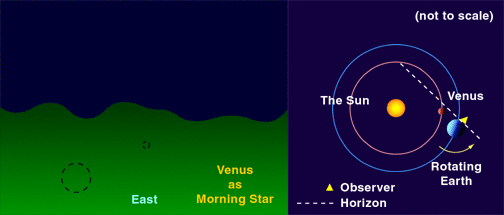
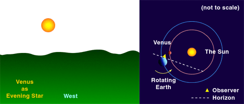
The others (Mars, Jupiter, Saturn, Uranus and Neptune) are called the superior planets. Due to their own revolutions, they move from west to east most of the time. We call it the prograde motion. Because the orbital speed of the Earth is larger, it sometimes "catches up" the superior planets. Apparently, they will move in the opposite direction, from east to west. We call it the retrograde motion. (Inferior planets also have both prograde and retrograde motions.) Normally, the retrograde motion of one superior planet will last from weeks to months. So, you cannot see it in a single night.
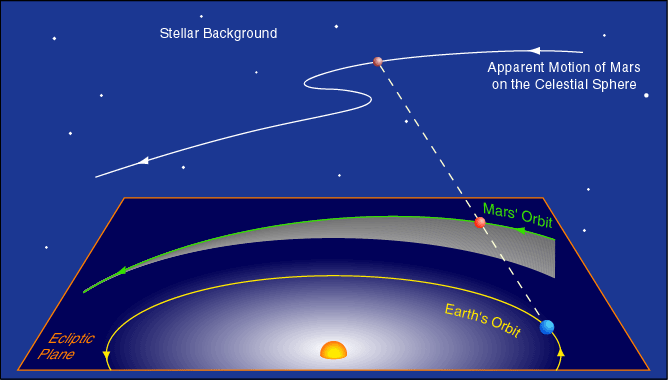